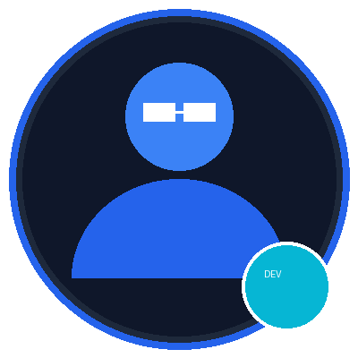

Técnico Laboral en Desarrollo de Software
Campuslands, Floridablanca
Formación práctica en desarrollo web, bases de datos y algoritmos.
En curso (2026)Desarrollador Junior | Consultor en Automatización & Audiovisual

Perfil multipotencial y autodidacta con sólida capacidad de aprendizaje rápido y experiencia en desarrollo de páginas web, automatización, gestión comercial y producción audiovisual. Fuerte pensamiento analítico y comunicación directa enfocada en aportar soluciones tecnológicas eficientes hacia el desarrollo Full Stack.
Campuslands, Floridablanca
Formación práctica en desarrollo web, bases de datos y algoritmos.
En curso (2026)SENA - Servicio Nacional de Aprendizaje
Diagnóstico, calibración y soporte técnico de equipos especializados.
CulminadoUniversidad UDES (4 Semestres)
Estrategia comercial, investigación de mercados y comunicación corporativa.
CompletadoHTML5 Semántico, CSS3 Grid Layout, Responsive Design Mobile First y JavaScript ES6+.
Diseño de flujos automatizados de trabajo e integración de herramientas de Inteligencia Artificial.
Mantenimiento preventivo/correctivo, diagnóstico de sistemas y arquitectura de redes.
Programación e instalación de soluciones IoT y sistemas automatizados de control residencial.
Contadores S.A.S. | 2013 - Presente
Desarrollo de portales web a medida y automatización de flujos de trabajo e información para áreas contables y de recursos humanos apoyado en Inteligencia Artificial.
Independiente / Propietario | 2020 - Presente
Diseño, configuración e instalación de sistemas domóticos e infraestructura inteligente en espacios comerciales y residenciales.
Diego TV | 2012 - Presente
Producción multimedia impulsada por IA, comercialización de soluciones tecnológicas y mantenimiento técnico informático.